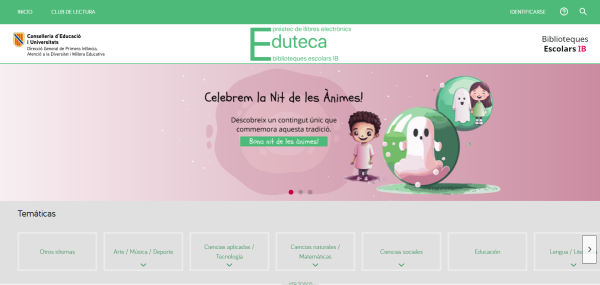

EDUTECA IB és una biblioteca escolar digital desenvolupada per la Conselleria d'Educació i Formació Professional. A partir del curs 2019-20 està oberta a tots els centres sostinguts amb fons públics de les Illes Balears. Accessible a través del web i l'aplicació mòbil EDUTECA IB, compta amb un fons de més de 4.000 exemplars.
Aquest és l'enllaç eduteca.biblioescolaib.
Els usuaris (estudiants, professors i famílies) poden descarregar llibres digitals als seus dispositius electrònics o llegir-los en línia.
